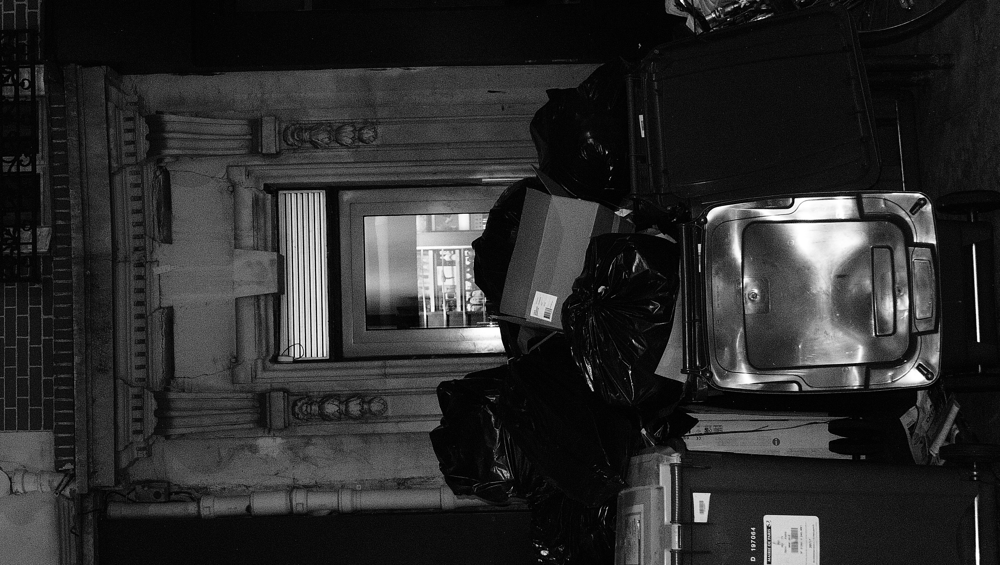
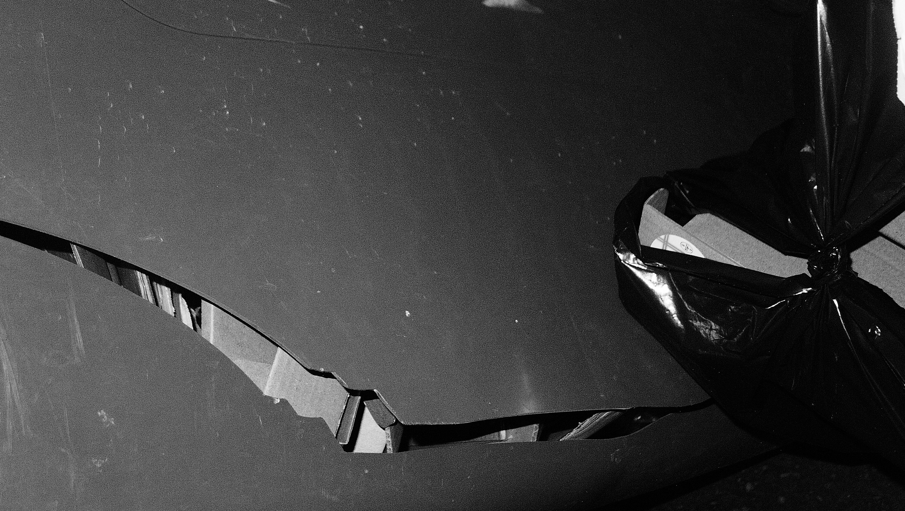
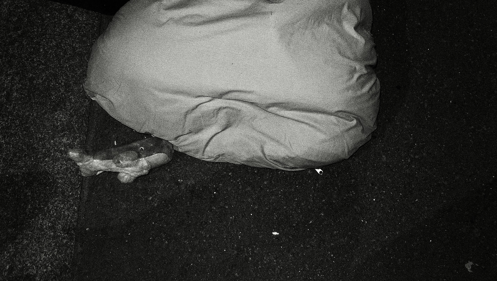
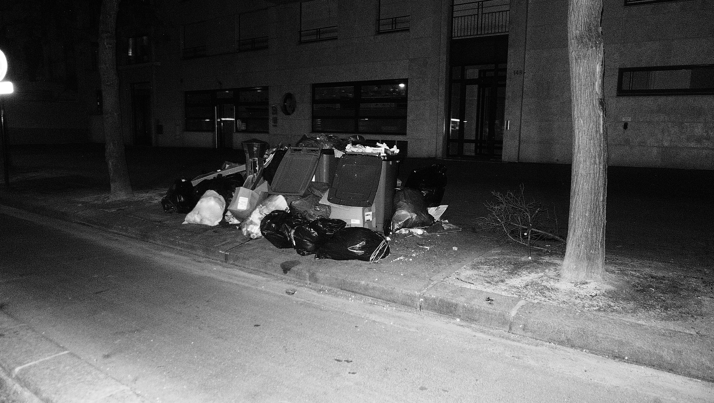

collaborative performance / paris / 2023
multispecies tour in paris
In March 2023, Paris was overwhelmed by an unprecedented accumulation of trash, exposing the fragility of municipal systems and the violence of urban extraction. Street closures and interruptions in garbage collection transformed the city into a live site of ecological and political tension.
Against this backdrop, artists and researchers transformed the crisis into a collaborative performance. Stops such as Place de l'Odeon became temporary forums for discussing dark ecology, urban decay, and anthropocentric infrastructures through the work of Timothy Morton, Guy Debord, and Donna Haraway.
The trash crisis became both material condition and conceptual tool: a way to question modern rhythms of productivity and cleanliness, and to reframe urban space as a multispecies and contested environment.
gallery
performance fragments


